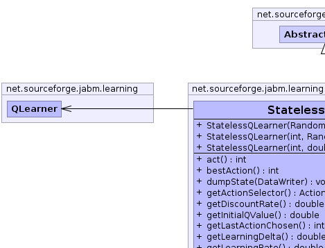
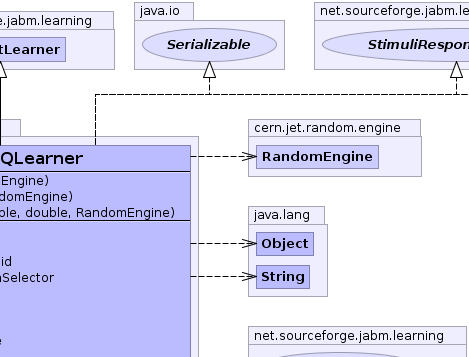
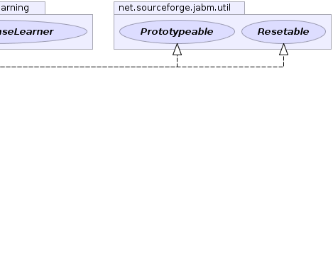
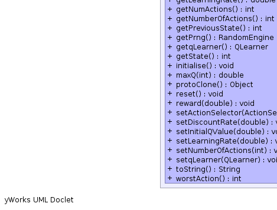
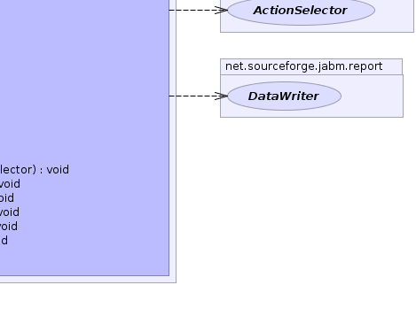

net.sourceforge.jabm.learning.AbstractLearner
net.sourceforge.jabm.learning.StatelessQLearner
net.sourceforge.jabm.learning.AbstractLearner
net.sourceforge.jabm.learning.StatelessQLearner
|
|||||||||
| PREV CLASS NEXT CLASS | FRAMES NO FRAMES | ||||||||
| SUMMARY: NESTED | FIELD | CONSTR | METHOD | DETAIL: FIELD | CONSTR | METHOD | ||||||||
java.lang.Object
public class StatelessQLearner
A memory-less version of the Q-Learning algorithm. This class implements StimuliResponseLearner instead of MDPLearner, and so can be used in place of, e.g. a RothErevLearner. We use the standard MDP QLearner class, but fool it with this wrapper into thinking that there is only one state.
|  |  |  |
|  |  |
| Field Summary |
|---|
| Fields inherited from class net.sourceforge.jabm.learning.AbstractLearner |
|---|
monitor |
| Constructor Summary | |
|---|---|
StatelessQLearner(int numActions,
double learningRate,
double discountRate,
cern.jet.random.engine.RandomEngine prng)
|
|
StatelessQLearner(int numActions,
cern.jet.random.engine.RandomEngine prng)
|
|
StatelessQLearner(cern.jet.random.engine.RandomEngine prng)
|
|
| Method Summary | |
|---|---|
int |
act()
Request that the learner perform an action. |
int |
bestAction()
|
void |
dumpState(DataWriter out)
Write out our state data to the specified data writer. |
ActionSelector |
getActionSelector()
|
double |
getDiscountRate()
|
double |
getInitialQValue()
|
int |
getLastActionChosen()
|
double |
getLearningDelta()
Return a value indicative of the amount of learning that occured during the last iteration. |
double |
getLearningRate()
|
int |
getNumActions()
|
int |
getNumberOfActions()
Get the number of different possible actions this learner can choose from when it performs an action. |
int |
getPreviousState()
|
cern.jet.random.engine.RandomEngine |
getPrng()
|
QLearner |
getqLearner()
|
int |
getState()
|
void |
initialise()
|
double |
maxQ(int newState)
|
java.lang.Object |
protoClone()
|
void |
reset()
Reinitialise our state to the original settings. |
void |
reward(double reward)
Reward the learning algorithm according to the last action it chose. |
void |
setActionSelector(ActionSelector actionSelector)
|
void |
setDiscountRate(double discountRate)
|
void |
setInitialQValue(double initialQ)
|
void |
setLearningRate(double learningRate)
|
void |
setNumberOfActions(int n)
|
void |
setqLearner(QLearner qLearner)
|
java.lang.String |
toString()
|
int |
worstAction()
|
| Methods inherited from class net.sourceforge.jabm.learning.AbstractLearner |
|---|
monitor |
| Methods inherited from class java.lang.Object |
|---|
clone, equals, finalize, getClass, hashCode, notify, notifyAll, wait, wait, wait |
| Methods inherited from interface net.sourceforge.jabm.learning.Learner |
|---|
monitor |
| Constructor Detail |
|---|
public StatelessQLearner(cern.jet.random.engine.RandomEngine prng)
public StatelessQLearner(int numActions,
double learningRate,
double discountRate,
cern.jet.random.engine.RandomEngine prng)
public StatelessQLearner(int numActions,
cern.jet.random.engine.RandomEngine prng)
| Method Detail |
|---|
public int act()
DiscreteLearner
act in interface DiscreteLearnerpublic int bestAction()
bestAction in interface StimuliResponseLearnerpublic int worstAction()
worstAction in interface StimuliResponseLearnerpublic double getDiscountRate()
public int getLastActionChosen()
public double getLearningRate()
public int getNumActions()
public int getPreviousState()
public cern.jet.random.engine.RandomEngine getPrng()
public int getState()
public void initialise()
public double maxQ(int newState)
public void setDiscountRate(double discountRate)
public void setLearningRate(double learningRate)
public java.lang.String toString()
toString in class java.lang.Objectpublic void reward(double reward)
StimuliResponseLearner
reward in interface StimuliResponseLearnerpublic void reset()
Resetable
reset in interface Resetablepublic double getLearningDelta()
Learner
getLearningDelta in interface LearnergetLearningDelta in class AbstractLearnerpublic int getNumberOfActions()
DiscreteLearner
getNumberOfActions in interface DiscreteLearnerpublic void setNumberOfActions(int n)
public QLearner getqLearner()
public void setqLearner(QLearner qLearner)
public ActionSelector getActionSelector()
public void setActionSelector(ActionSelector actionSelector)
public void dumpState(DataWriter out)
Learner
dumpState in interface LearnerdumpState in class AbstractLearnerpublic java.lang.Object protoClone()
protoClone in interface Prototypeablepublic void setInitialQValue(double initialQ)
public double getInitialQValue()
|
|||||||||
| PREV CLASS NEXT CLASS | FRAMES NO FRAMES | ||||||||
| SUMMARY: NESTED | FIELD | CONSTR | METHOD | DETAIL: FIELD | CONSTR | METHOD | ||||||||